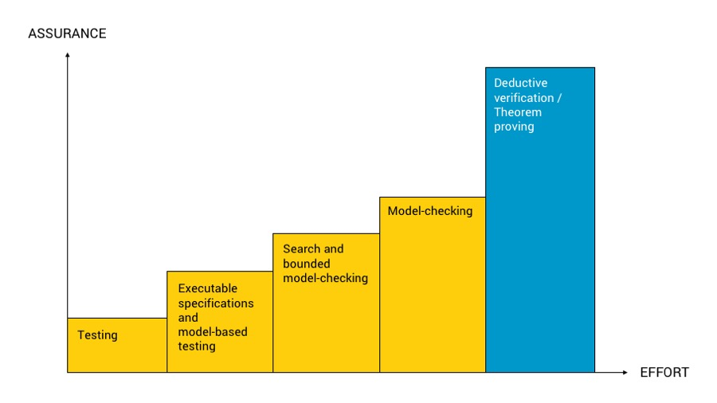

<!doctype html>
<html>
	<head>
		<meta charset="utf-8">
		<meta name="viewport" content="width=device-width, initial-scale=1.0, maximum-scale=1.0, user-scalable=no">

		<title>Formal Land - Formal verification of Solidity</title>

		<link rel="stylesheet" href="dist/reset.css">
		<link rel="stylesheet" href="dist/theme/white.css">
		<link rel="stylesheet" href="dist/reveal.css">

		<link rel="shortcut icon" type="image/jpg" href="https://formal.land/img/icons/land.png" />

		<!-- Theme used for syntax highlighted code -->
		<link rel="stylesheet" href="plugin/highlight/monokai.css">
	</head>
	<body>
		<div class="reveal">
			<div class="slides">
				<section data-markdown>
					<script type="text/template">
						<!-- # 🌲 Formal Land -->
						<!-- # Formal verification for Solidity ✨ -->
						# 🌲&nbsp;Formal&nbsp;Land
						

						> Formal verification for Solidity ✨

						<small>[https://formal.land/](https://formal.land/)</small>
					</script>
				</section>
				<section data-markdown>
					<script type="text/template">
						## 👥 Who we are
						* team of 5
						* formal verification/audit specialists
						* leading project: [verification of Tezos 💫](https://formal-land.gitlab.io/coq-tezos-of-ocaml/)
					</script>
				</section>
				<section data-markdown>
					<script type="text/template">
						## 🎯 What we propose
						<!-- Make *formal&nbsp;verification* accessible to *general&nbsp;programming*. -->
						<!-- <p class="r-fit-text"> -->
						<em>Formal verification</em> of
						<em>Solidity programs</em>.
						<!-- </p> -->
					</script>
				</section>
				<section data-markdown>
					<script type="text/template">
						## ❓ Why
						* a lot of value stored in smart contracts
						* millions of $ stolen at a time 💰
						* hard to test all the cases 🌌
					</script>
				</section>
				<section data-markdown>
					<script type="text/template">
						## ⚙️ Technology
						* Proof engine [Coq](https://coq.inria.fr/) 🐓
						* Specifications and proofs in Coq ✒️
						* Translation to Coq with our tool [coq-of-solidity](https://gitlab.com/formal-land/coq-of-solidity)
						<!-- * Be competitive with testing/code reviewing 🏇 -->
						<!-- * <a href="https://formal.land/" target="_blank">Formal Land <svg width="28" height="28" aria-hidden="true" viewBox="0 0 24 24" class="iconExternalLink_3J9K"><path fill="currentColor" d="M21 13v10h-21v-19h12v2h-10v15h17v-8h2zm3-12h-10.988l4.035 4-6.977 7.07 2.828 2.828 6.977-7.07 4.125 4.172v-11z"></path></svg></a> -->
					</script>
				</section>
				<section data-markdown>
					<script type="text/template">
						## 🥇 Positioning
						<br />
						We do <em>theorem&nbsp;proving</em>, the highest level of code&nbsp;certification<br />
						<small>(picture from [Runtime Verification](https://runtimeverification.com/blog/formally-verifying-algorand-reinforcing-a-chain-of-steel-modeling-and-safety/))</small>
					</script>
				</section>
				<section data-markdown>
					<script type="text/template">
						## 🚀 How we proceed
						1. Translation of the Solidity code to Coq
						2. Specifications in Coq
						3. Proofs that specifications are always valid ✅
					</script>
				</section>
				<section data-markdown>
					<script type="text/template">
						## We offer ✅ 🛍️
						* Detected bugs (even when extensive testing) 🧨
						* Detected potential vulnerabilities 🕳️
						* A cleaner code 🪒
					</script>
				</section>
				<section data-markdown>
					<script type="text/template">
						## 🏁 To start
						* fill [this form](https://n25o5qrzcx2.typeform.com/to/mltUWY58) or
						* send us an email [contact@formal.land](mailto:contact@formal.land)&nbsp;✉️
					</script>
				</section>
				<!-- <section data-markdown>
					<script type="text/template">
						## Strategy
						* Go to Coq as fast as possible
						* Do all the proofs in Coq (either automatic or manual)
						* Our tool: <a href="https://formal-land.github.io/coq-of-ocaml/" target="_blank">coq-of-ocaml <svg width="28" height="28" aria-hidden="true" viewBox="0 0 24 24" class="iconExternalLink_3J9K"><path fill="currentColor" d="M21 13v10h-21v-19h12v2h-10v15h17v-8h2zm3-12h-10.988l4.035 4-6.977 7.07 2.828 2.828 6.977-7.07 4.125 4.172v-11z"></path></svg></a>
					</script>
				</section>
				<section data-markdown>
					<script type="text/template">
						## Our main user: Tezos
						<svg xmlns="http://www.w3.org/2000/svg" width="150px" fill="none" viewBox="0 0 200 250"><path fill="#1161FE" stroke="#0F62FF" stroke-width="4" class="transform-gpu scale-150" d="M175.8 171.2c-2.3-40.7-53.5-59.2-58.4-61.1-.2-.1-.2-.3-.1-.5l52.8-53v-5.7c0-.9-.8-1.7-1.7-1.7H71.1V7.7l-35.9 7.5v5.4h2s8.8 0 8.8 8.8v19.7H18.2c-.5 0-1 .5-1 1v12.5h28.9v67.9c0 21.3 13.7 36.1 37.7 34.1 5.1-.4 9.8-2.4 13.8-5 1.8-1.2 2.9-3.1 2.9-5.3v-6.7c-7.8 5.2-14.4 4.9-14.4 4.9-15.2 0-14.9-19.3-14.9-19.3V62.6h70l-50.4 50.8c-.1 6.7-.2 11.9-.2 12 0 .2.1.3.3.3 46.2 7.8 58.7 37.7 58.7 46.4 0 0 5 42.3-37.3 45.2 0 0-27.7 1.2-32.6-9.9-.2-.4 0-.8.4-1 4.6-2.1 7.7-6.2 7.7-11.7 0-8.2-5-14.9-15.5-14.9-8.5 0-15.5 6.7-15.5 14.9 0 0-4 35.6 55.4 34.6 67.8-1.2 63.6-58.1 63.6-58.1z"></path></svg>
						* crypto-currency in OCaml
						* 40,000 lines of critical code converted to Coq
						* project <a href="https://formal-land.gitlab.io/coq-tezos-of-ocaml/" target="_blank">coq-tezos-of-ocaml <svg width="28" height="28" aria-hidden="true" viewBox="0 0 24 24" class="iconExternalLink_3J9K"><path fill="currentColor" d="M21 13v10h-21v-19h12v2h-10v15h17v-8h2zm3-12h-10.988l4.035 4-6.977 7.07 2.828 2.828 6.977-7.07 4.125 4.172v-11z"></path></svg></a>
					</script>
				</section> -->
				<!-- <section data-markdown>
					<script type="text/template">
						## What we verify
						* data-encoding
						* smart-contract interpreter
						* storage system
						* optimizations
					</script>
				</section>
				<section data-markdown>
					<script type="text/template">
						## What we do
						* setting up the translation pipeline
						* writing the specification (from the tests)
						* writing the proofs
						* maintenance
					</script>
				</section> -->
				<section data-markdown>
					<script type="text/template">
						# Thanks!
						🌲&nbsp;Formal&nbsp;Land
						> Formal verification for everyday-life programs
						<!-- For code audit or questions DM us:<br />
						[contact@formal.land](mailto:contact@formal.land)&nbsp;✉️ -->
						<!-- > The more you are demanding,<br />
						> the more you need us. -->

						🏇
					</script>
				</section>
			</div>
		</div>

		<script src="dist/reveal.js"></script>
		<script src="plugin/notes/notes.js"></script>
		<script src="plugin/markdown/markdown.js"></script>
		<script src="plugin/highlight/highlight.js"></script>
		<script>
			// More info about initialization & config:
			// - https://revealjs.com/initialization/
			// - https://revealjs.com/config/
			Reveal.initialize({
				hash: true,

				// Learn about plugins: https://revealjs.com/plugins/
				plugins: [ RevealMarkdown, RevealHighlight, RevealNotes ]
			});
		</script>
	</body>
</html>
